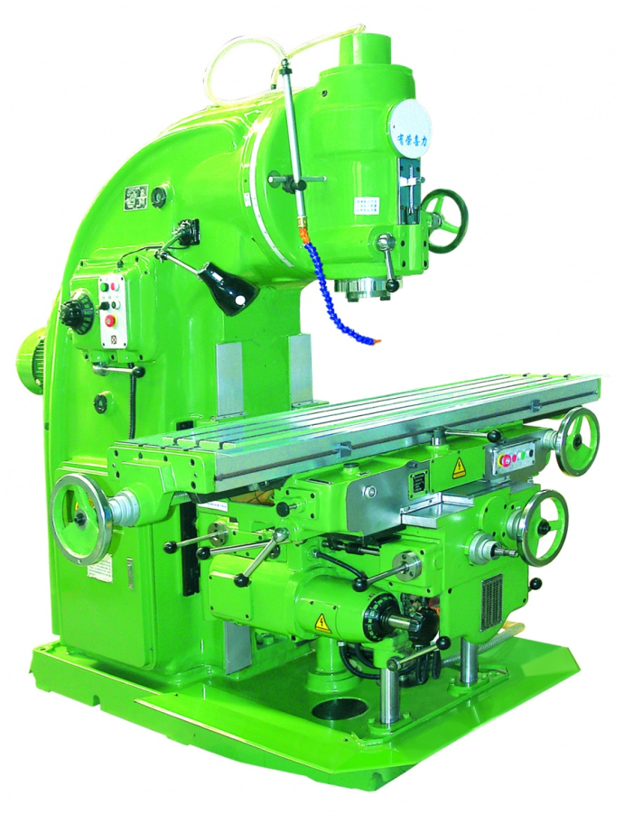

Универсальные консольно-фрезерные станки внешне почти не отличаются от горизонтальных станков, но имеют поворотный стол, который помимо возможности перемещения в трех взаимно перпендикулярных направлениях может быть повернут вокруг своей вертикальной оси на ±450. Это позволяет обрабатывать на станке винтовые канавки и нарезать косозубые колеса.
Консольно-фрезерные станки
На фрезерных станках можно обрабатывать наружные и внутренние поверхности различной конфигурации, прорезать прямые и винтовые канавки, нарезать наружные и внутренние резьбы, обрабатывать зубчатые колеса и т.д.
Рисунок - Схемы обработки на фрезерных станках
Различают станки: консольно-фрезерные (горизонтальные, вертикальные, универсальные и широкоуниверсальные), вертикально-фрезерные, бесконсольные, продольно-фрезерные (одно- и двухстоечные), фрезерные непрерывного действия (карусельные и барабанные), копировально-фрезерные (для контурного и объемного фрезерования), гравировально-фрезерные, специализированные (резьбофрезерные, шпоночно-фрезерные, шлицефрезерные и др.).
В современных фрезерных станках применяют разделенные принципы главного движения и подач, механизмы ускоренных перемещений стола (во всех направления), однорукояточное управление изменения скоростей подач. В станках узлы и детали широко унифицированы.
Станки называют консольными потому, что стол станка установлен на консоли, перемещающейся вверх по направляющим станины. К консольно-фрезерным станкам относят горизонтально-фрезерные, вертикально-фрезерные, универсальные и широкоуниверсальные станки. Основным размером фрезерных станков общего назначения является размер рабочей поверхности стола. У горизонтальных консольно-фрезерных станков ось шпинделя расположена горизонтально, и стол передвигается в трех взаимно перпендикулярных направлениях.

Вертикальные консольно-фрезерные станки по внешнему виду отличаются от горизонтальных вертикальным расположением оси шпинделя и отсутствием хобота. Хобот у горизонтальных станков служит для закрепления кронштейна, поддерживающего конец фрезерной оправки.
Широкоуниверсальные консольно-фрезерные станки в отличие от универсальных имеют дополнительный шпиндель, поворачивающийся вокруг вертикальной и горизонтальной осей. Имеются также широкоуниверсальные станки с двумя шпинделями (горизонтальным и вертикальным) и столом, поворачивающимся вокруг горизонтальной оси. В широкоуниверсальных фрезерных станках шпиндель может быть установлен под любым углом к обрабатываемой заготовке.
Горизонтально-, вертикально- и универсально-фрезерные станки являются основными модификациями консольно-фрезерных станков и представляют собой станки общего назначения.